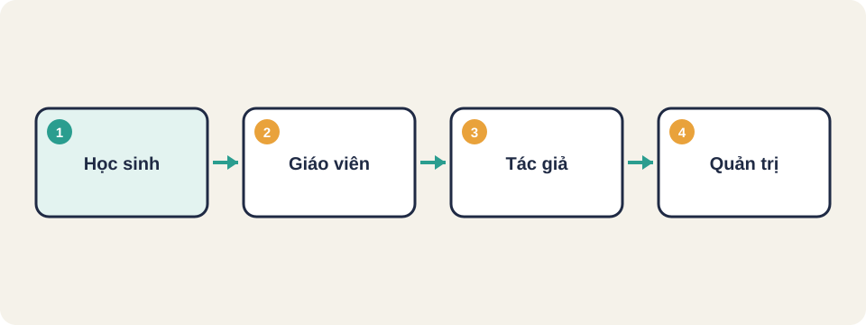
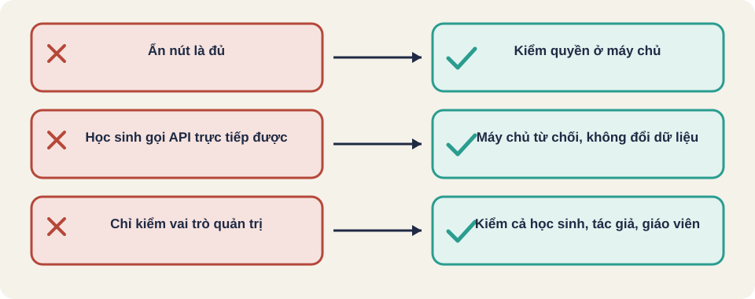

Hình vẽ gốc, dùng để minh họa thứ tự các bước chính của bài.
Học sinh, giáo viên, tác giả và quản trị làm được gì? Tìm ca truy cập trái phép trong một app thật.

Hình vẽ gốc, dùng để minh họa thứ tự các bước chính của bài.
Học sinh biết mã bài của một giáo viên khác, rồi thử mở đúng địa chỉ đó, hoặc gửi yêu cầu sửa bài. Nếu app không chặn, học sinh đọc hoặc sửa nội dung không thuộc về mình.
Nguồn: Thư viện Học liệu K12 (README và backend/tests của repo), đã đọc. Vai trò và quyền lấy từ bảng vai trò của README.
Thuật ngữ trong slide này: Vai trò (role): Nhóm người dùng có cùng quyền, như học sinh, giáo viên, quản trị.
| Vai trò | Xem học liệu | Soạn và sửa | Duyệt và chặn | Quản trị hệ thống |
|---|---|---|---|---|
| Học sinh | Có (bài tập, slide, không thấy ghi chú giáo viên) | Không | Không | Không |
| Giáo viên | Có (kể cả đáp án và ghi chú) | Không | Không | Không |
| Tác giả | Có | Của mình | Không | Không |
| Quản trị nội dung | Có | Có (mọi học liệu) | Có | Không |
| Quản trị hệ thống | Có | Có | Có | Có |
Nguồn: Thư viện Học liệu K12 (README và backend/tests của repo), đã đọc. Ghi chú: ô "Soạn và sửa" của quản trị nội dung là "Sửa mọi học liệu" trong README.
Thuật ngữ trong slide này: Vai trò (role): Nhóm người dùng có cùng quyền, như học sinh, giáo viên, quản trị.
Giao diện ẩn nút sửa với học sinh là trải nghiệm. Bảo mật phải nằm ở máy chủ: mọi yêu cầu phải kiểm lại quyền. Tester cần gọi trực tiếp API, không đi qua nút bấm.
Nguồn: Thư viện Học liệu K12 (README và backend/tests của repo), đã đọc. Thư viện có kiểm tra quyền trong REST API, theo README.
| Người gọi | Hành động | Đối tượng | Kết quả mong đợi |
|---|---|---|---|
| Học sinh A | Xem bài tập | Bài của lớp mình | Được xem |
| Học sinh A | Xem bài tập | Bài của lớp khác | Bị từ chối |
| Học sinh A | Sửa học liệu | Bất kỳ | Bị từ chối |
| Tác giả X | Sửa học liệu | Của người khác (Y) | Bị từ chối |
| Giáo viên | Xem ghi chú giảng dạy | Học liệu của lớp mình | Được xem |
| Học sinh A | Xem ghi chú giảng dạy | Bất kỳ | Không thấy (ẩn ở máy chủ) |
Đăng nhập học sinh A, lấy mã phiên.
Gửi yêu cầu sửa học liệu của tác giả khác (mã 1234).
Kỳ vọng: 403 hoặc 401, không có thay đổi nào trong cơ sở dữ liệu.
Kiểm lại: học liệu 1234 không đổi phiên bản.Đây là kiểu kiểm thử "IDOR": thay đổi mã đối tượng trong yêu cầu để xem máy chủ có kiểm quyền sở hữu không.
Nguồn: Thư viện Học liệu K12 (README và backend/tests của repo), đã đọc. Tên test lấy từ backend/tests/test_api.py.
Thuật ngữ trong slide này: Vai trò (role): Nhóm người dùng có cùng quyền, như học sinh, giáo viên, quản trị.
Với ma trận trên, hãy viết thêm 3 ca mà bạn nghĩ app dễ bỏ sót. Gợi ý: học sinh đã đổi lớp, giáo viên đã bị khóa tài khoản, phiên đã đăng xuất ở thiết bị khác.
Trong bảng ma trận, có bao nhiêu ca mà học sinh được làm việc không được phép? Viết lại bằng một câu lệnh để máy đếm được.

Thuật ngữ trong slide này: Vai trò (role): Nhóm người dùng có cùng quyền, như học sinh, giáo viên, quản trị.
Phân quyền (authorization)
Vai trò (role)